Trading_and_investment_papers plus Daily Shot when available.
Window PDFs6
Chart Extracts15
Top Charts3
Daily Shotskipped
Bottom line: This packet is the one-stop morning read: curated chart evidence first, Daily Shot context second, and source links at the end.
Top Charts
1. upside panic nobody wants protection: Options are shaping the path of the underlying
Page 5 | upside panic nobody wants protection
What it says: upside panic nobody wants protection: LSEG Workspace Fine for now, but... McElligott argues the market has become extremely fragile because investors keep aggressively chasing upside through call options, while leveraged ETF buying has further amplified the melt-up. The problem is that if SPX s...
Worldview update: The rally has become more flow-mechanical. Fundamentals still matter, but call demand, vol compression, and dealer positioning are first-order timing variables.
Portfolio/use: Favor defined-risk upside and start adding downside while hedges are ignored.
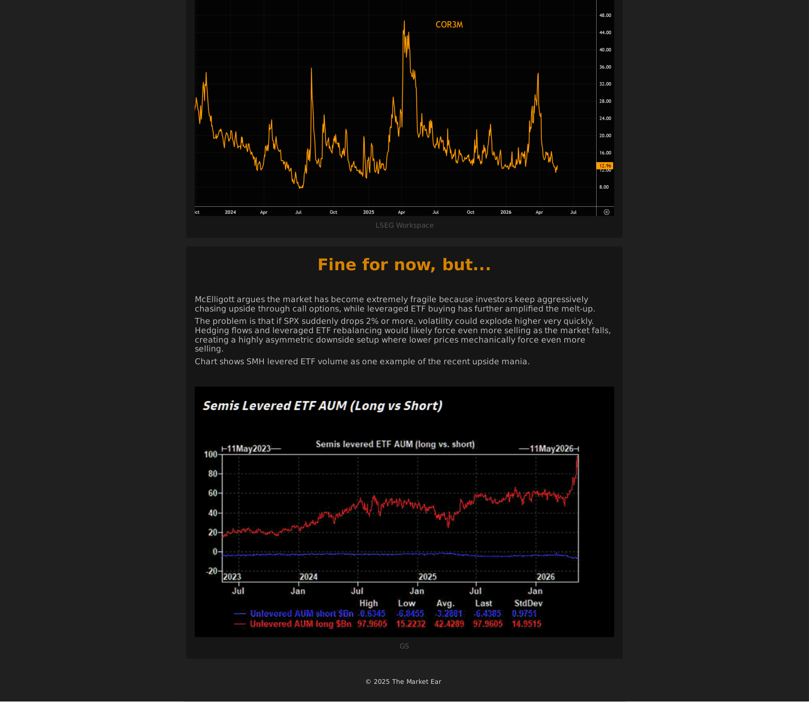
2. Brent vs Copper: Oil stress is feeding rates, while equities are looking through it
Page 1 | Brent vs Copper
What it says: Brent vs Copper: Brent vs Copper 20 May 2026 person Tallulah Adams Goldman Sachs International Global Banking & Markets Short Brent: Placing more weight on a de-escalation given yield move which was the turning point during tariffs, approaching peak demand season + positive...
Worldview update: The cleaner market signal is the cross-asset divergence: oil stress has mattered for rates, but equities are already looking through it. That calm is fragile if energy pressure starts feeding inflation or growth expectations again.
Portfolio/use: Track Brent, rates, and equity correlation together; use oil/rates stress as the warning light rather than treating headlines in isolation.
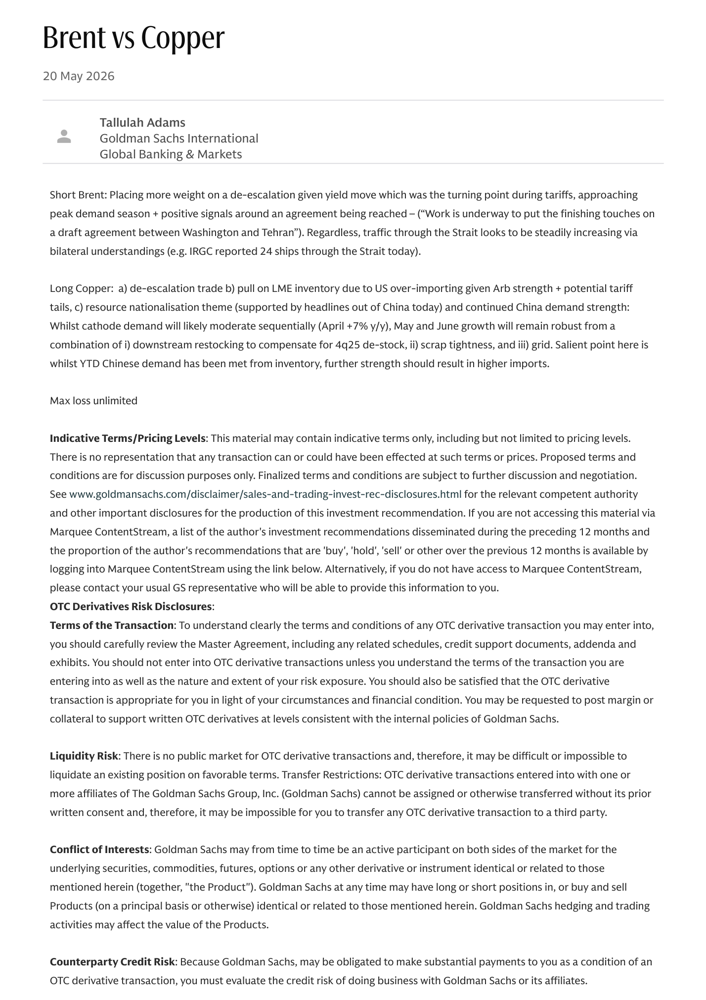
3. schizophrenic markets: AI is becoming a capex, power, and politics story
Page 1 | schizophrenic markets
What it says: schizophrenic markets: Schizophrenic Retail investors continue panic-buying equities, while institutions still look far more cautious, trimming exposure in some of the market’s most crowded trades. At the same time, equity allocations just exploded higher, cash levels triggered a...
Worldview update: The AI trade is no longer only about demand and model progress. The constraint is shifting toward cash-flow intensity, grid capacity, permitting, and public tolerance.
Portfolio/use: Map AI exposure through power, grid, utilities, gas, and capex beneficiaries; be careful where capex consumes free cash flow.
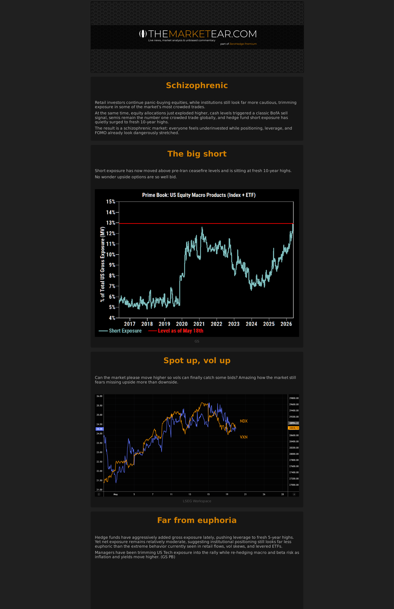
Daily Shot
Daily Shot was unavailable for this run.
Additional Chart Selection
upside panic nobody wants protection
2 additional extracted charts
Chart 1
Page 3 | vector-cluster | score 0.800
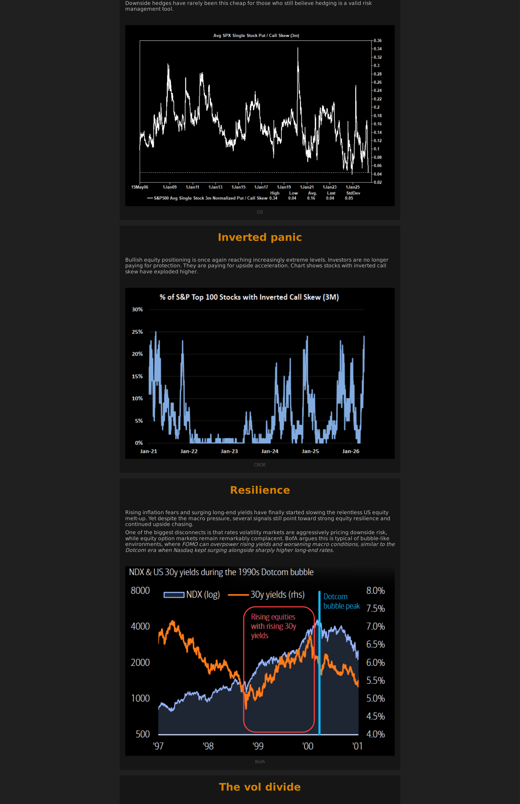
Chart 2
Page 4 | vector-cluster | score 0.746
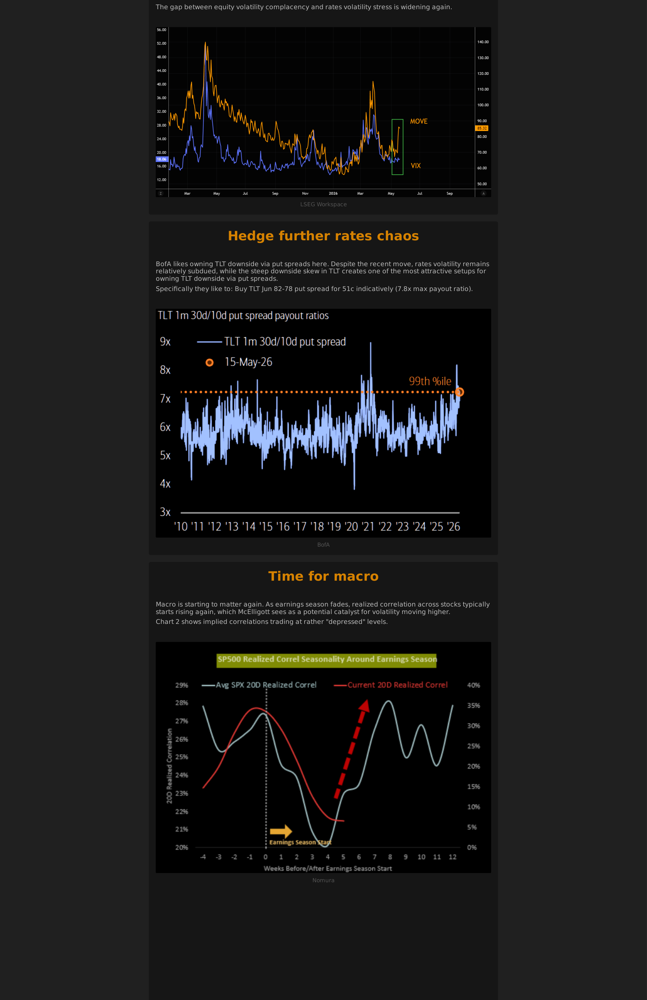
schizophrenic markets
2 additional extracted charts
Chart 1
Page 2 | vector-cluster | score 0.726
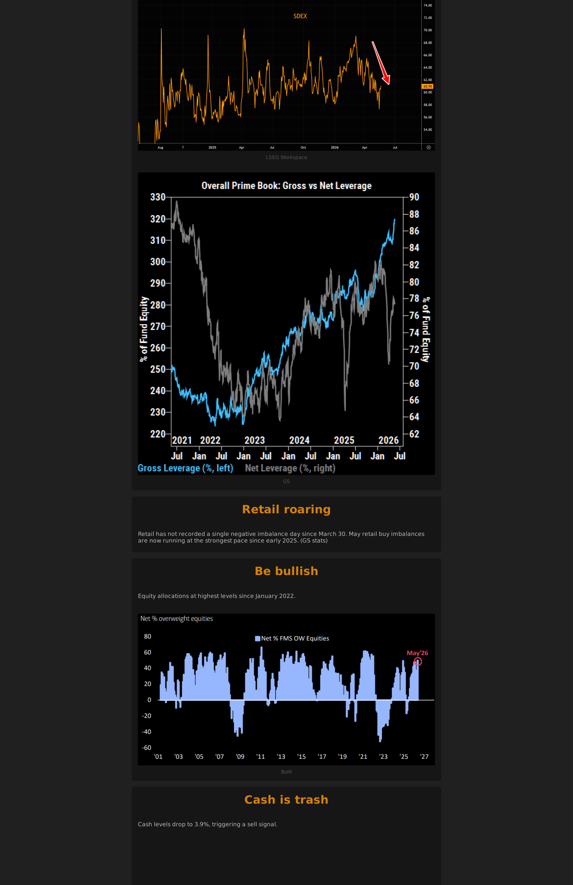
Chart 2
Page 4 | vector-cluster | score 0.815
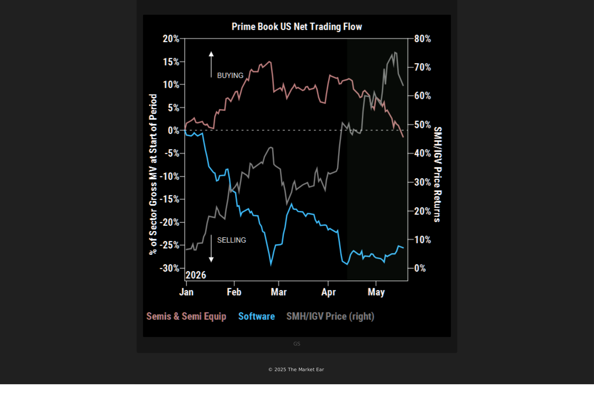
markets still refuse to believe in king dollar
3 additional extracted charts
Chart 1
Page 1 | vector-cluster | score 0.800
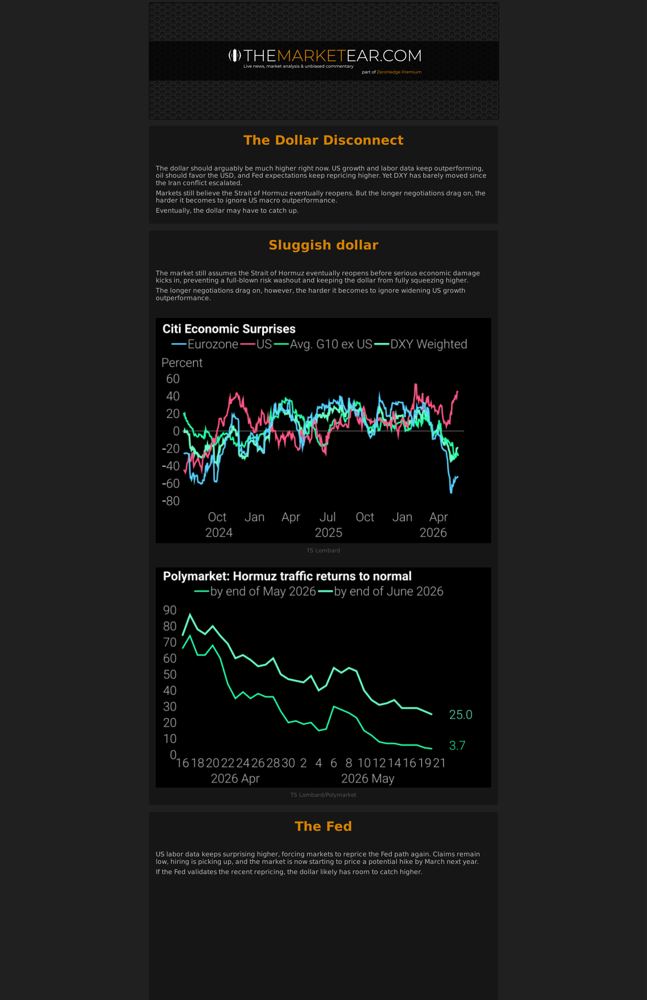
Chart 2
Page 2 | vector-cluster | score 0.725
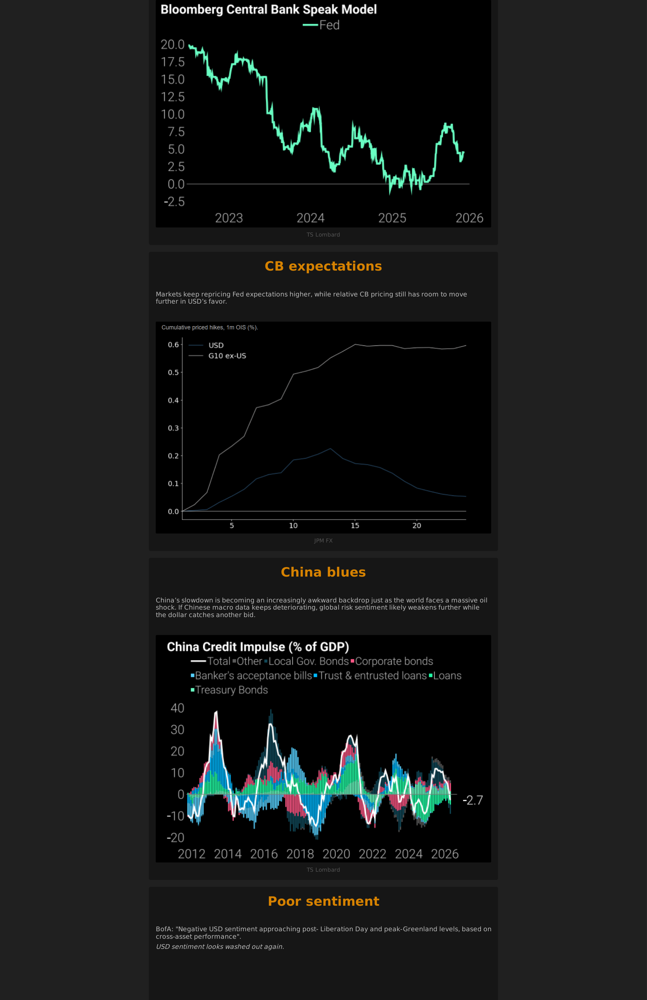
Chart 3
Page 3 | vector-cluster | score 0.739
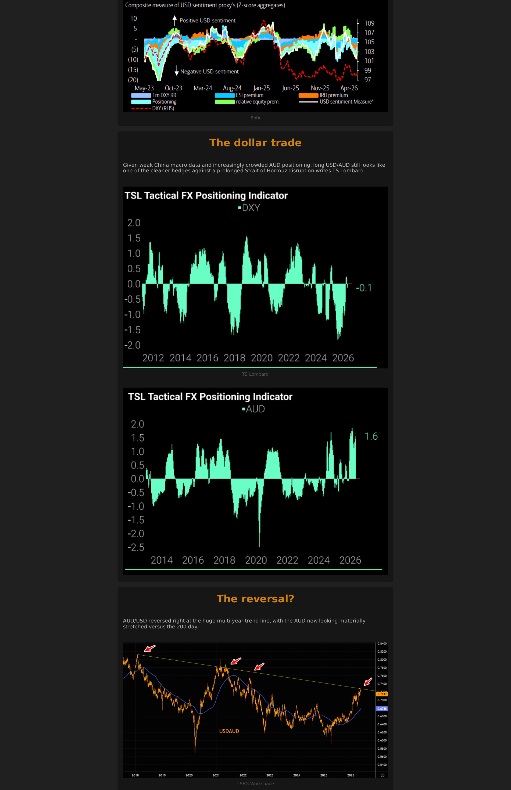
US EQUITIES COLOR MO BOUNCE PEACE HOPES NVDA
2 additional extracted charts
Chart 1
Page 1 | vector-cluster | score 0.665
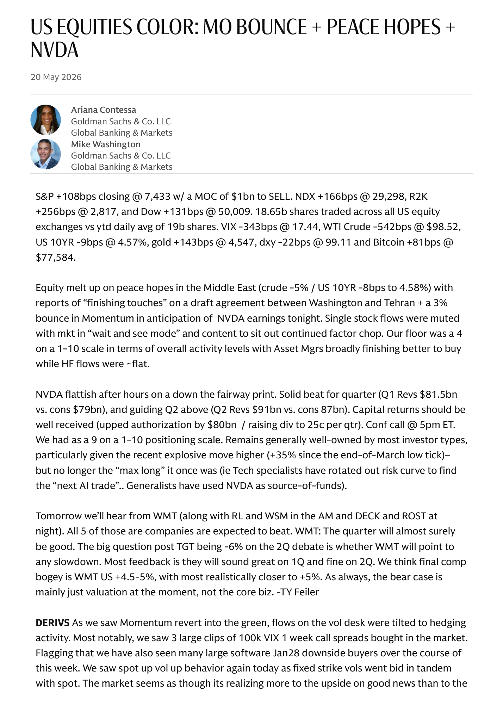
Chart 2
Page 3 | image-block | score 0.546
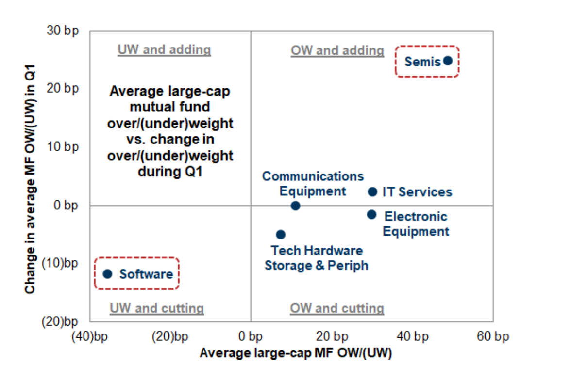
BofA Global Positioning in Stocks Contrarians beware 20260521